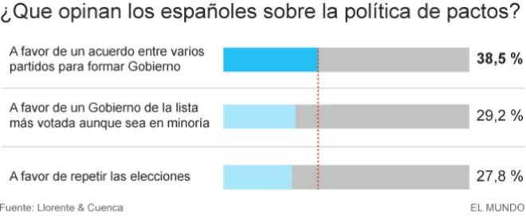

Sólo PP y PSOE mejorarían sus resultados del 20 de diciembre si se repitieran las elecciones generales, según un sondeo realizado por Llorente y Cuenca. Cuando se cumple un mes de los últimos comicios, los populares ganarían 13 escaños y los socialistas, seis. Podemos perdería seis representantes en el Congreso y Ciudadanos.
Según la encuesta, realizada a mil personas en toda España, la repetición de elecciones es la última opción para los ciudadanos, que prefieren un acuerdo entre varios partidos para formar un Gobierno (38.5%) o incluso un Ejecutivo de la lista más votada, aunque fuera en minoría (29,2%). El 27,8% apuesta por volver a las urnas.

En tal caso, el PP pasaría a tener 136 escaños frente a los 123 actuales, el PSOE, 96 frente a 90, Podemos, 63 ante 69 y Ciudadanos, 29 ante los 40 de la actualidad. Unidad Popular-Izquierda Unida perdería uno de sus dos escaños; Democràcia i Llibertat bajaría en un asiento su representación (7 diputados), mientras que ERC, PNV y Bildu conservarían el mismo número de actas.
Con estos resultados, la suma de PP y Ciudadanos (165 diputados) sería insuficiente para investir un presidente en primera votación, como tras el 20 de diciembre, mientras que el bloque de los partidos de izquierdas tampoco variaría tanto como para facilitar un gobierno en menos tiempo.